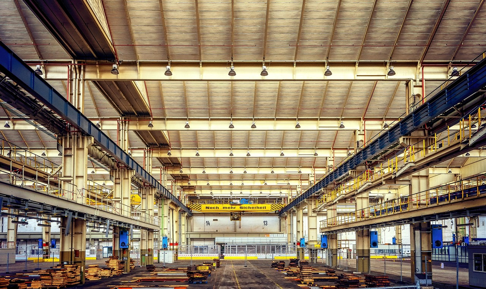

PRATHMESH GROUP OF INDUSTRIES,a trusted name in the construction industry, committed to building strong foundations for the future.
With a focus on quality, safety, and sustainability, we specialize in residential, commercial, and infrastructure development.
Since our inception, we have worked passionately to deliver projects that stand the test of time.
Our team of experienced engineers,architects, and project managers ensure that every structure we build reflects precision, durability, and aesthetic appeal.
We use modern techniques and eco-friendly materials to promote sustainable construction.
From initial planning to project completion, we maintain transparency, efficiency, and client satisfaction at every step.
Whether it’s a home, office space, or a large-scale infrastructure project – we build with purpose, passion, and perfection.
🔸 Building Sides
🛠 Construction refers to the process of building structures, encompassing everything from planning and design to the physical erection of buildings, infrastructure, and other physical assets. It involves a coordinated effort of various professionals, including architects, engineers, contractors, and skilled laborers, to bring a project to completion, from initial concept to the finished product.
Residential Construction
Individual homes, villas, and apartments
Bungalows and luxury residential units
Layout planning, approvals, and construction
Commercial Construction
Office buildings, retail outlets, malls
Hotels, hospitals, and educational institutions
Modern design with functional space utilization
Infrastructure Development
Internal roads, drainage, water supply systems
Power supply and electrical layout
Foundation and base work for machinery
Mechanical & Civil Work
Machine foundation installation
Equipment and utility pipeline construction
Civil work for office blocks and service areas
Turnkey Project Solutions
Complete handling from design to handover
Timeline and cost-controlled project management
Safety, quality, and compliance assurance
Renovation & Expansion
Structural renovation of existing industrial units
Site expansion for increased production capacity
Retrofitting and strengthening of structures
🔸 Land Devlopement Sides
Planning and Design:
This involves conceptualizing the project, developing detailed architectural and engineering plans, and securing necessary permits.
Execution:
This phase includes site preparation, foundation laying, structural assembly, and the installation of various building systems (electrical, plumbing, etc.).
Management:
Effective project management is crucial for coordinating resources, timelines, and budgets to ensure the project stays on track.
Materials and Labor:
Construction utilizes a wide range of materials and requires skilled labor to assemble and install them according to specifications.
Types of Construction:
Construction projects can be broadly categorized into residential, commercial, industrial, and infrastructure projects,
🔸 Industrial Side

🛠 Our Services
Industrial Building Construction
Construction of warehouses, factories, processing units, and production plants
Pre-engineered buildings (PEB) and steel structures
RCC framed structures for heavy-duty operations
Design & Planning
Architectural and structural design
Site layout planning
3D modeling and project visualization
Infrastructure Development
Internal roads, drainage, water supply systems
Power supply and electrical layout
Foundation and base work for machinery
Mechanical & Civil Work
Machine foundation installation
Equipment and utility pipeline construction
Civil work for office blocks and service areas
Turnkey Project Solutions
Complete handling from design to handover
Timeline and cost-controlled project management
Safety, quality, and compliance assurance
Renovation & Expansion
Structural renovation of existing industrial units